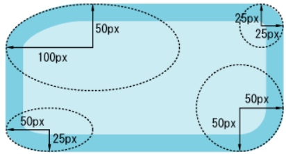

border-radius 制作各种形状
深入理解 border-radius
以前常用的关于 border-radius 属性的就是
|
|
但其实border-radius 还有很多属性，可以用来画出各种形状
link:
border-radius: 100px 25px 50px 50px / 50px 25px 50px 25px;
/斜杠前是水平方向圆角半径，斜杠后是垂直方向圆角半径。顺序同样遵守TRBL（Top-Right-Bottom-Left）原则，依此是上右下左的圆角水平半径 / 上右下左的圆角垂直半径。一图胜千言：（将代码和图对照着看一下，很容易就能明白）

需要注意的地方：
- 属性值的写法: 水平半径 / 垂直半径
如果我们只写一个值的话，比如：
border-radius: 100px等价于border-radius: 100px / 100px，默认水平和垂直半径是相等的。在这种情况下，相邻圆角弧度发生重叠的条件是：px值超过了长宽中最小值的一半 或 %值超过了50%。
一旦超过相邻圆角弧度发生重叠的限制条件：
- 若只写一个值的话，比如：
border-radius: 100px或border-radius: 100%，则半径为长宽中最小值的一半- 若写了两个值（且相邻圆角弧度发生重叠）如
border-radius: 100px / 200px则半径按照比例（100：200）
- 半径的临界点是50%
对正方形来说，单值的border-radius超过50%或大于超过正方形半径的px值时，仍旧是个完美的圆。
link：利用border-radius 和 伪元素::before/::after 制作图形